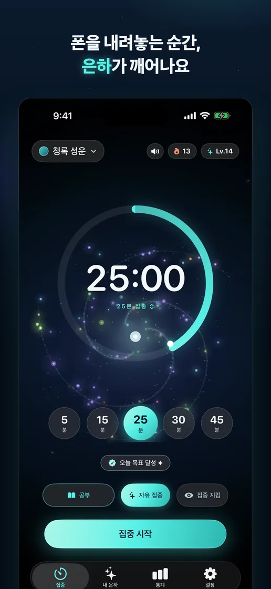
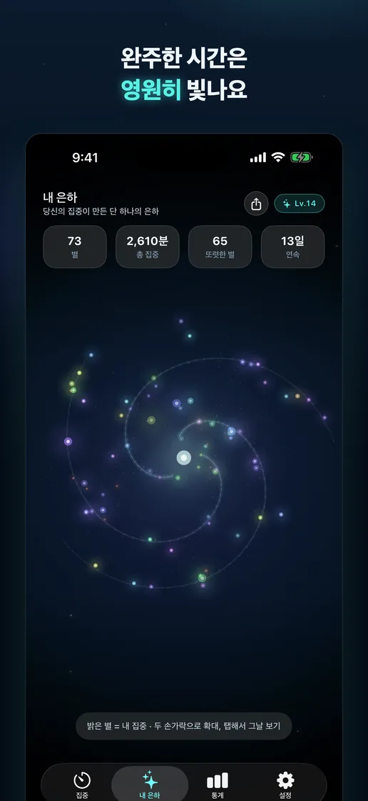
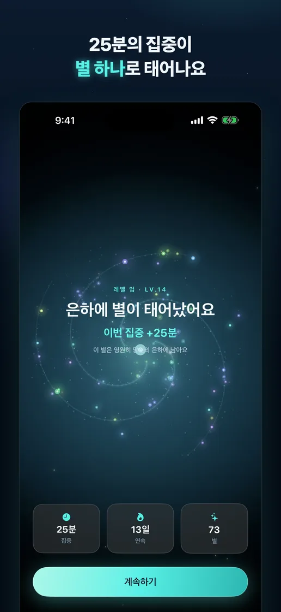
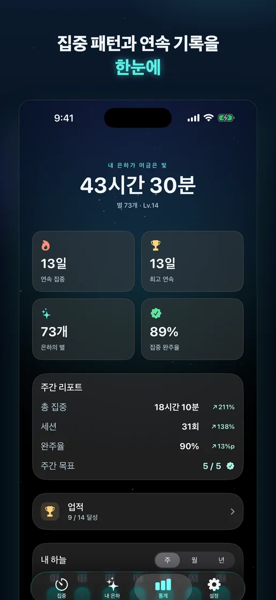
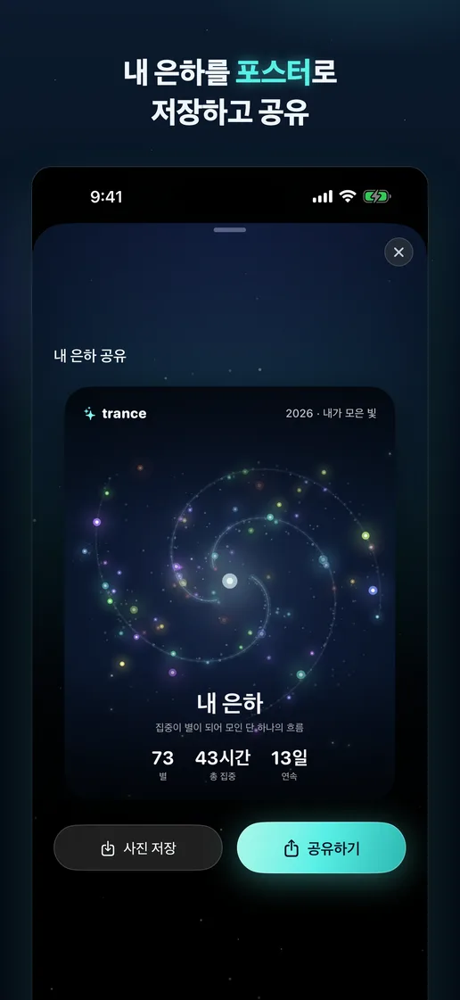
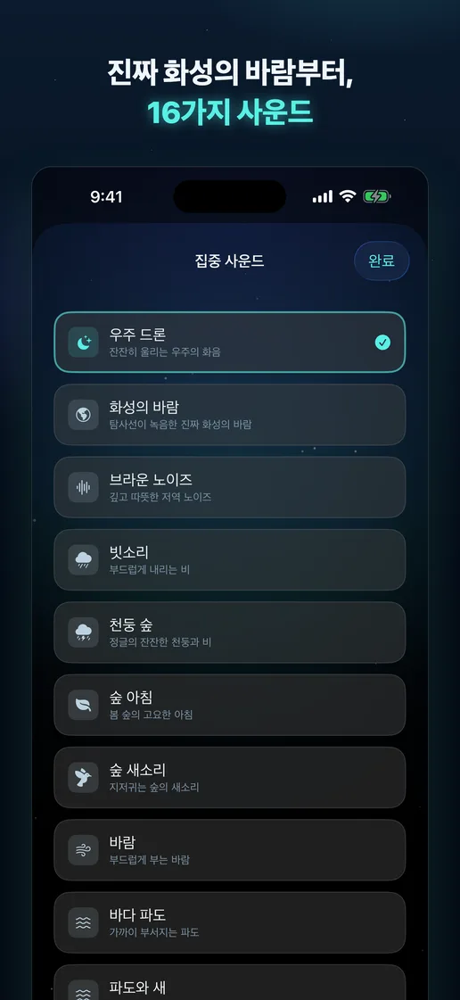

집중 하나, 별 하나
세션을 완주할 때마다 시간과 색을 품은 별이 생겨 나만의 은하에 쌓입니다.
집중이 별이 되는 시간
타이머를 끝까지 완주하면 오늘의 집중이 한 점의 별로 남아요. 차분한 사운드와 함께 몰입하고, 쌓여 가는 은하에서 나의 시간을 바라보세요.
App Store 출시 준비 중한국어 · English · 日本語 · iPhone


몰입의 흔적
기록을 숫자에만 가두지 않고, 돌아보고 싶은 풍경으로 바꿉니다.
세션을 완주할 때마다 시간과 색을 품은 별이 생겨 나만의 은하에 쌓입니다.
별을 돌려 보고 확대하며, 오늘과 이번 주의 집중이 만든 흐름을 한눈에 확인하세요.
16가지 사운드, 통계, 포스터, 위젯과 Live Activity가 집중 전후를 자연스럽게 이어 줍니다.
앱 미리보기




집중 기록과 은하는 내 기기에만 저장됩니다. 앱 개선을 위해 광고 식별자 없이 익명 사용 통계만 수집하며, 집중 내용이나 신원과 연결하지 않습니다.